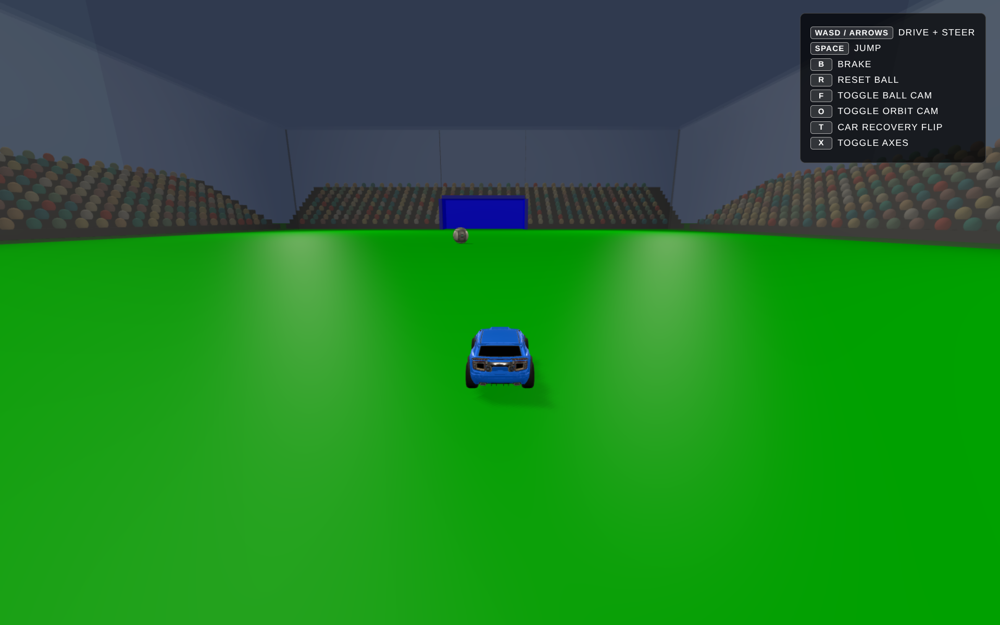
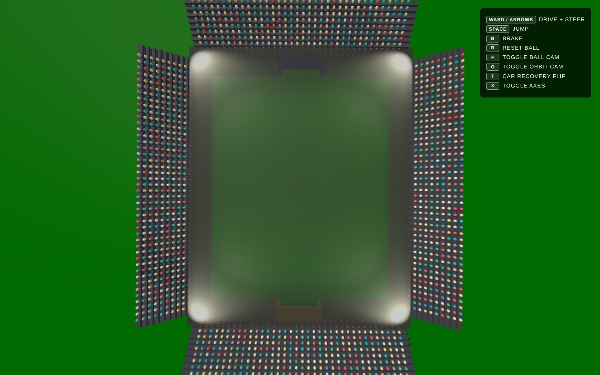
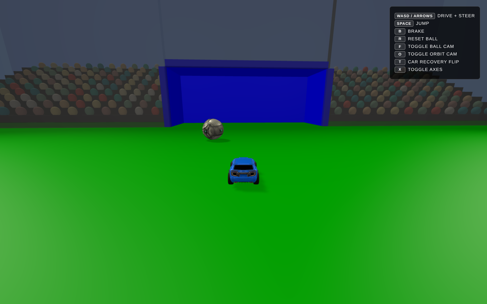

CS 360 Final Project
My final project for CS 360, this mini version of rocket league mixes 3d rednering and physics. By combining Three.js with the Cannon-es physics engine, I created a functional rocket league clone where you can interact with a ball, score goals, and drive a car.
Standard kickoff position:

Full arena overview:

Interaction showing the ball being scored:
